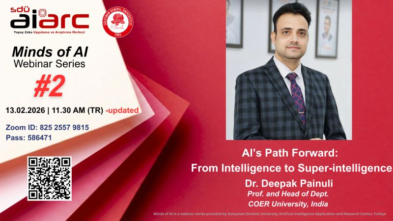
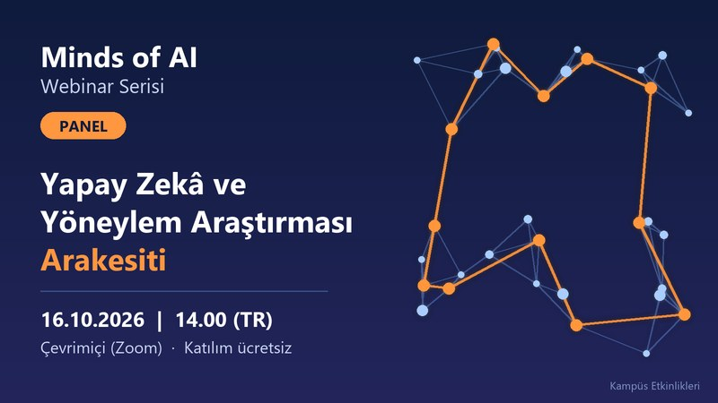

AI’s Path Forward: From Intelligence to Super-intelligence

Şekil: Minds of AI #2 afişi
Kategori: Webinar
Tarih:
Yer: Çevrimiçi (Zoom)
AIARC'ın "Minds of AI" webinar serisinin 2. oturumunda Dr. Deepak Painuli, yapay
zekânın süper zekâya uzanan yolunu anlatıyor.
Detayları gör
Yapay Zekâ ve Yöneylem Araştırması Arakesiti

Şekil: YZ ve Yöneylem Araştırması paneli afişi
Kategori: Panel
Tarih:
Yer: Çevrimiçi (Zoom)
AIARC'ın "Minds of AI" serisi kapsamında yapay zekâ ile yöneylem
araştırmasının kesişimini konu alan panel oturumu.
Detayları gör